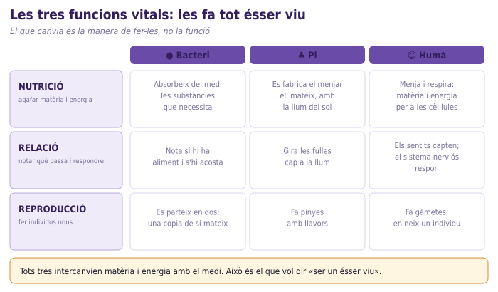
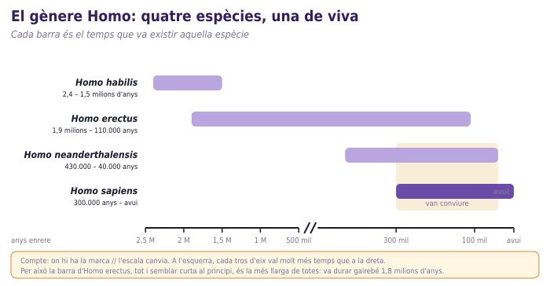

✎ Clica per editar · Ctrl+B negreta · × rosa elimina · Ctrl+Z desfés · Ctrl+S desa
✕
🌳
Créixer i reproduir-se · Sessió 1 de 4
Qui som? El lloc de l'ésser humà
Som animals? I si ho som, què ens fa diferents dels altres?
Biologia i Geologia · 3r ESO IE Temple
✕
Semiguiat
✕
⏱️ Sessió de 2 h · 83 min en aquesta fitxa
✕
✕
Nom:
Data:
B
✕
🎯 Objectius d'aprenentatge d'avui (Nivell B)
Situo l'ésser humà com un ésser viu més i com l'única espècie viva del gènere Homo, i ho justifico amb caràcters, no amb impressions.
Construeixo un cladograma ordenant espècies segons els caràcters que comparteixen.
Explico que les classificacions científiques són provisionals i canvien amb proves noves, com l'ADN.
Distingeixo una pregunta «de biologia» d'una pregunta «de decisió i valors».
⏱️ Com es reparteix la sessió (2 h). Obertura de la bústia de preguntes 5 min (en paperets, no en aquesta fitxa) · apartats 0 a 4 d'aquesta fitxa 83 min · full de sortida, en un full a part 7 min · recollida i tancament 5 min. Són 100 min; la resta és el temps de repartir les targetes i moure els grups.
🔤 Vocabulari d'avui
caràcter — una cosa que un ésser viu té (pèl, columna vertebral, quatre potes...).
caràcter compartit — caràcter que tenen dues espècies o més.
cladograma — arbre que ordena els éssers vius segons els caràcters que comparteixen.
taxonomia — manera de classificar els éssers vius en grups encaixats.
gènere — grup de classificació just per damunt de l'espècie (el nostre és Homo).
espècie — grup d'individus que es poden reproduir entre ells (la nostra, sapiens).
extingit — que ja no en queda cap individu viu.
bipedisme — caminar sempre dret sobre dues cames.
funcions vitals — les tres coses que fa tot ésser viu: nutrició, relació i reproducció.
morfologia — la forma del cos d'un ésser viu.
vertebrat — animal amb columna vertebral.
mamífer — animal amb pèl i les cries del qual mamen llet.
✕
0
Idees prèvies ⏱️ 7 min
Primer dibuixes, després escrius. No es corregeix
✕
Comencem una unitat nova. Escriu i dibuixa el que penses ara: no es corregeix, i el tornaràs a mirar al final de la unitat per veure com ha canviat.
✕
📮
La bústia de preguntes. Avui s'obre una caixa on pots deixar, sense posar-hi el nom, qualsevol pregunta sobre el cos, la reproducció o la sexualitat. Queda oberta totes les setmanes d'aquesta unitat. Acord d'aula: es respecta, no es jutja, es fan servir paraules científiques i el que es diu a l'aula es queda a l'aula.
Dibuixa un arbre amb aquests quatre: humà, ximpanzé, peix i planta. Col·loca-hi l'humà on et sembli.
✕
el teu arbre
✕
1
Som animals? Què et sembla que ens fa humans: que pensem, que parlem, que tenim cultura… o també alguna cosa biològica?
✕
1
El cladograma de targetes ⏱️ 35 min
En grups de 4, amb les targetes d'espècies i de caràcters
✕
2
Abans de tocar cap targeta: quin criteri faràs servir per ordenar les espècies de «més semblant» a «menys semblant» a l'humà?
💡 Poseu cada targeta de caràcter al costat de totes les espècies que el tenen. Després compteu. El pi només té el primer caràcter: és normal.
Caràcter
Quantes espècies el tenen
Quines NO el tenen
té cèl·lules
ha de menjar altres éssers vius
té columna vertebral
té quatre extremitats
es reprodueix fora de l'aigua
té pèl i les cries mamen
té el polze oposable
no té cua
camina sempre dret sobre dues cames
3. Dibuixeu l'arbre del vostre grup. Cada branca marca el punt on apareix un caràcter nou: escriviu el caràcter damunt de cada branca.
✕
l'arbre del grup
✕
4
On heu posat l'humà i amb quin caràcter ho justifiqueu?
💡 No val «s'assembla» ni «és més llest»: ha de ser un caràcter de les targetes.
✕
5
Hi ha dues espècies que us han fet dubtar. Quines són i per quina raó?
✕
2
Funcions vitals i el gènere Homo ⏱️ 20 min
El que compartim amb tot ésser viu i el que ens fa la nostra espècie
✕

🖼️Les tres funcions vitals en tres éssers vius
Fig. 1 — Un bacteri, un pi i tu feu les mateixes tres funcions. El que canvia és com les feu.
6. Omple la taula amb un exemple per casella. Fixa't en la figura 1 i en el que s'ha explicat.
Ésser viu
Nutrició
Relació
Reproducció
Bacteri
Pi
Humà
💡 El pi també fa les tres funcions, però la nutrició la fa d'una manera diferent: recorda la fotosíntesi de la primera unitat.
✕

🖼️Línia temporal del gènere Homo
Fig. 2 — Quatre espècies del gènere Homo. Compte amb la marca // de l'eix: l'escala canvia.
7. Omple la taula del nostre gènere fent servir la figura 2.
Pregunta
Resposta
Espècie del gènere Homo que encara és viva
Dues espècies del gènere Homo que estan extingides
Dos caràcters distintius de la nostra espècie
Dues espècies del gènere que van conviure a Europa
🔬
Moment epistèmic — com sabem el que sabem
A l'activitat de les targetes han sortit dos problemes, i tots dos són importants. (a) La serp. No té quatre extremitats, però els seus avantpassats sí que en tenien: les va perdre. Algunes serps encara conserven a dins un trosset d'os de la pelvis. (b) El goril·la i el ximpanzé. Amb les targetes queden empatats: comparteixen exactament els mateixos caràcters amb nosaltres. Quan els científics van poder llegir l'ADN, van poder desempatar casos com aquest i molts arbres «segurs» van canviar. Això no vol dir que abans s'equivoquessin: vol dir que la ciència millora quan té proves noves.
✕
8
Per quina raó la serp no encaixava on esperaves? Què hi diuen els fòssils i l'ADN?
✕
9
Amb les targetes, el goril·la i el ximpanzé queden empatats. Quina prova ha permès desempatar-los, i quin dels dos és el nostre parent viu més proper?
✕
3
Tres espècies noves i les preguntes de la bústia ⏱️ 18 min
En parelles
10. Col·loqueu aquestes tres espècies a l'arbre que heu construït. Per a cadascuna, digueu quin caràcter ho decideix.
Espècie
Caràcters de la llista que té
On va a l'arbre
Caràcter que ho justifica
🐬 Dofí
🐊 Cocodril
🐌 Cargol
11. El professor llegirà dues o tres preguntes de la bústia. Apunta-les (amb quatre paraules n'hi ha prou) i decideix de quin tipus són.
💡 De biologia = es pot comprovar amb una dada o un experiment. De decisió i valors = depèn de cada persona i de la societat; la ciència sola no la respon.
Pregunta de la bústia
De biologia o de decisió?
Com ho saps?
✕
🎟️
Full de sortida (7 min). Al final de la classe el professor et donarà un full a part amb 3 preguntes. Es fa tot sol/a i es recull. Aquesta fitxa te la quedes tu.
✕
4
Metacognició
Com ha anat avui ⏱️ 3 min
🚦
Com ho veig
🟢 ho tinc🟡 a mitges🔴 perdut/uda
💭
Una cosa que m'ha sorprès de l'arbre de la vida
✕
Marca el que ja sabries explicar a algú altre
✕
Situo l'ésser humà com un ésser viu més i com l'única espècie viva del gènere Homo, i ho justifico amb caràcters, no amb impressions.
✕
Construeixo un cladograma ordenant espècies segons els caràcters que comparteixen.
✕
Explico que les classificacions científiques són provisionals i canvien amb proves noves, com l'ADN.
✕
Distingeixo una pregunta «de biologia» d'una pregunta «de decisió i valors».
✕
📚 Després de la sessió
✕
1
📮 Cap deures obligatoris. Si et ve una pregunta al cap durant la setmana, escriu-la i posa-la a la bústia el proper dia.
✕
2
👀 Fixa't, quan vagis pel carrer o miris una sèrie, en algun animal i pregunta't quins dels nou caràcters d'avui tindria.